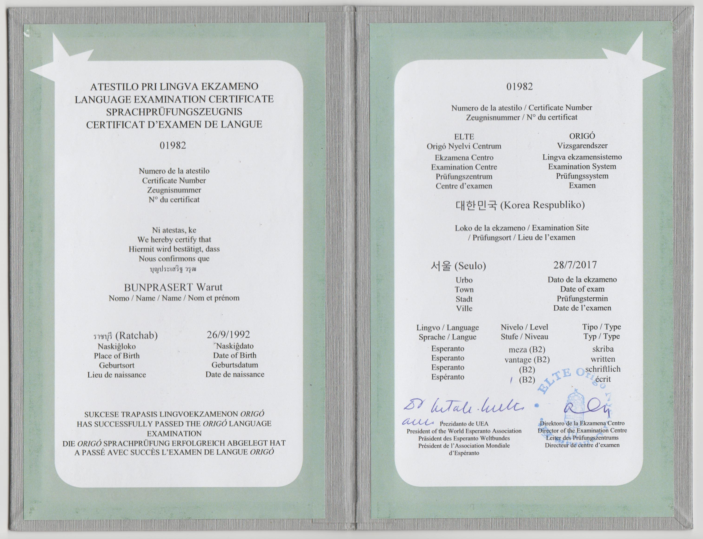

ประวัติส่วนตัว
ชื่อ นาย
วรุฒ นามสกุล
บุญประเสริฐ
วันที่ 26 กันยายน 2535
อายุ
ที่อยู่ปัจจุบัน 108/1 หมู่ 8 ตำบลคลองปูน อำเภอแกลง จังหวัดระยอง 21170
ภูมิลำเนา จ.สมุทรสงคราม
อีเมล
warut@csw.ac.th
ประวัติการศึกษา
| ระดับ |
ชื่อสถาบัน |
ปีการศึกษา |
วุฒิที่ได้รับ |
| มัธยมศึกษา |
โรงเรียนโสภณศิริราษฎร์ (ราชบุรี) |
2553 |
ม.6 |
| ปริญญาตรี |
มหาวิทยาลัยศรีนครินทรวิโรฒ (กทม) |
2558 |
กศ.บ. (ศิลปกรรมศาสตร์ศึกษา:ดนตรีศึกษา-ดนตรีไทย) |
ประวัติการรับราชการ
บรรจุครั้งแรกที่
โรงเรียนชำนาญสามัคคีวิทยา เมื่อวันที่ 2 มกราคม 2562 อายุราชการ
ความรู้ความสามารถพิเศษ

ภาษาเอสเปรันโต (CEFR B2 (UEA-KER B2 Skriba))